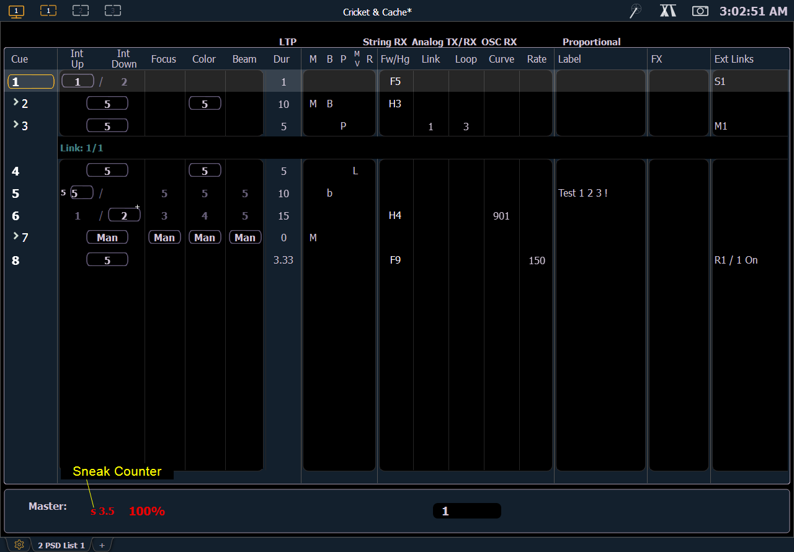

Indicators in the Playback Status Display
Element relies on many traditional ETC indicators which you may be familiar with, as well as some new ones. This section identifies the graphical and colorful conventions used in Element to indicate conditions to you.

Color indicators
Cue List
- Gold - Any item (cue, list, page) highlighted in gold indicates “current”.
Outlined in gold indicates “selected”. - Red - Cue fade is in progress
Text indicators
- * - Indicates a link to a non-existent cue. Found in the cue display "Link" area.
- + (see cue 6) - Indicates that there is discrete timing within the associated cue. Found in the cue display “Timing” area.
- B or b (see cues 2 & 5) - Indicates a blocked cue. “B” indicates the entire cue is blocked. “b” indicates a channel/parameter block only. Found in the cue display “Flags” area.
- F5 (see in cue 1) - Indicates a follow time associated with the cue (in this case, 9 seconds). Found in the cue display. Notice the arrow on Cue 2.
- H3 (see cue 2) - Indicates a hang time associated with the cue (in this case 4 seconds). Found in the cue display. Notice the arrow on Cue 3.
- M (see cue 7) - Indicates a marked cue. “M” indicates an AutoMark.
- L - Indicates a live move. A "D" in the Move column would indicate a dark move. A “+” is used to show that both types of moves are in that cue.
- P (see cue 3) - Indicates the cue will preheat. Found in the cue display “Flags” area.
- Number in the FX column - Indicates a cue level effects override.
- M1 (see in cue 3) - Indicates a linked macro.
- S1 (see in cue 1) - Indicates a linked string. The string will display here.
- Relay 1/1 (see in cue 8) - Indicates a linked relay.
Note: The playback status display will show a red counter for sneak time.
Note: If any show control options are currently enabled in Setup>System>Show Control, they will display at the top of the Playback Status Display.
For more details on information contained in the playback status display, see Playback Status Display .